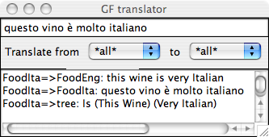

This is a hands-on introduction to grammar writing in GF.
Main ingredients of GF:
Prerequisites:
Lesson 1: a multilingual "Hello World" grammar. English, Finnish, Italian.
Lesson 2: a larger grammar for the domain of food. English and Italian.
Lesson 3: parameters - morphology and agreement.
Lesson 4: using the resource grammar library.
Lesson 5: semantics - dependent types, variable bindings, and semantic definitions.
Lesson 6: implementing formal languages.
Lesson 7: embedded grammar applications.
You can chop this tutorial into a set of slides by the command
htmls gf-tutorial.html
where the program htmls is distributed with GF (see below), in
The slides will appear as a set of files beginning with 01-gf-tutorial.htmls.
Internal links will not work in the slide format, except for those in the upper left corner of each slide, and the links behind the "Contents" link.
Goals:
We use the term GF for three different things:
The GF system is an implementation of the GF programming language, which in turn is built on the ideas of the GF theory.
The main focus of this tutorial is on using the GF programming language.
At the same time, we learn the way of thinking in the GF theory.
We make the grammars run on a computer by using the GF system.
A GF program is called a grammar.
A grammar defines of a language.
From this definition, language processing components can be derived:
In general, a GF grammar is multilingual:
Open-source free software, downloaded via the GF Homepage:
There you find
Many examples in this tutorial are online.
Normally you don't have to compile GF yourself.
But, if you do want to compile GF from source, you need the Haskell compiler GHC.
We assume a Unix shell: Bash in Linux, "terminal" in Mac OS X, or Cygwin in Windows. But you can do most things even without Cygwin in Windows.
Type gf in the Unix (or Cygwin) shell:
% gf
You will see GF's welcome message and the prompt >.
The command
> help
will give you a list of available commands.
As a common convention, we will use
% as a prompt that marks system commands
> as a prompt that marks GF commands
Thus you should not type these prompts, but only the characters that follow them.
Like most programming language tutorials, we start with a program that prints "Hello World" on the terminal.
Extra features:
A GF program, in general, is a multilingual grammar. Its main parts are
The abstract syntax defines what meanings can be expressed in the grammar
GF code for the abstract syntax:
-- a "Hello World" grammar
abstract Hello = {
flags startcat = Greeting ;
cat Greeting ; Recipient ;
fun
Hello : Recipient -> Greeting ;
World, Mum, Friends : Recipient ;
}
The code has the following parts:
Hello
Greeting is the
default start category for parsing and generation
English concrete syntax (mapping from meanings to strings):
concrete HelloEng of Hello = {
lincat Greeting, Recipient = {s : Str} ;
lin
Hello recip = {s = "hello" ++ recip.s} ;
World = {s = "world"} ;
Mum = {s = "mum"} ;
Friends = {s = "friends"} ;
}
The major parts of this code are:
Hello, itself named HelloEng
Greeting and Recipient are records with a string s
Notice the concatenation ++ and the record projection ..
Finnish and an Italian concrete syntaxes:
concrete HelloFin of Hello = {
lincat Greeting, Recipient = {s : Str} ;
lin
Hello recip = {s = "terve" ++ recip.s} ;
World = {s = "maailma"} ;
Mum = {s = "äiti"} ;
Friends = {s = "ystävät"} ;
}
concrete HelloIta of Hello = {
lincat Greeting, Recipient = {s : Str} ;
lin
Hello recip = {s = "ciao" ++ recip.s} ;
World = {s = "mondo"} ;
Mum = {s = "mamma"} ;
Friends = {s = "amici"} ;
}
In order to compile the grammar in GF,
we create four files, one for each module, named Modulename.gf:
Hello.gf HelloEng.gf HelloFin.gf HelloIta.gf
The first GF command: import a grammar.
> import HelloEng.gf
All commands also have short names; here:
> i HelloEng.gf
The GF system will compile your grammar into an internal representation and show the CPU time was consumed, followed by a new prompt:
> i HelloEng.gf
- compiling Hello.gf... wrote file Hello.gfc 8 msec
- compiling HelloEng.gf... wrote file HelloEng.gfc 12 msec
12 msec
>
You can use GF for parsing (parse = p)
> parse "hello world"
Hello World
Parsing takes a string into an abstract syntax tree.
The notation for trees is that of function application:
function argument1 ... argumentn
Parentheses are only needed for grouping.
Parsing something that is not in grammar will fail:
> parse "hello dad"
Unknown words: dad
> parse "world hello"
no tree found
You can also use GF for linearization (linearize = l).
It takes trees into strings:
> linearize Hello World
hello world
Translation: pipe linearization to parsing:
> import HelloEng.gf
> import HelloIta.gf
> parse -lang=HelloEng "hello mum" | linearize -lang=HelloIta
ciao mamma
Default of the language flag (-lang): the last-imported concrete syntax.
Multilingual generation:
> parse -lang=HelloEng "hello friends" | linearize
terve ystävät
ciao amici
hello friends
Linearization is by default to all available languages.
Hello.gf and some of the
concrete syntaxes by five new recipients and one new greeting
form.
Hello grammars, for example, leave out
some line, omit a variable in a lin rule, or change the name
in one occurrence
of a variable. Inspect the error messages generated by GF.
You can use the gf program in a Unix pipe.
% echo "l Hello World" | gf HelloEng.gf HelloFin.gf HelloIta.gf
You can also write a script, a file containing the lines
import HelloEng.gf
import HelloFin.gf
import HelloIta.gf
linearize Hello World
If we name this script hello.gfs, we can do
$ gf --run <hello.gfs
ciao mondo
terve maailma
hello world
The option --run removes prompts, CPU time, and other messages.
See Lesson 7, for stand-alone programs that don't need the GF system to run.
Exercise. (For Unix hackers.) Write a GF application that reads an English string from the standard input and writes an Italian translation to the output.
Some more functions that will be covered:
Application programs, using techniques from Lesson 7:
Goals:
Phrases usable for speaking about food:
Phrase
Phrase can be built by assigning a Quality to an Item
(e.g. this cheese is Italian)
Item is build from a Kind by prefixing this or that
(e.g. this wine)
Kind is either atomic (e.g. cheese), or formed
qualifying a given Kind with a Quality (e.g. Italian cheese)
Quality is either atomic (e.g. Italian,
or built by modifying a given Quality with the word very (e.g. very warm)
Abstract syntax:
abstract Food = {
flags startcat = Phrase ;
cat
Phrase ; Item ; Kind ; Quality ;
fun
Is : Item -> Quality -> Phrase ;
This, That : Kind -> Item ;
QKind : Quality -> Kind -> Kind ;
Wine, Cheese, Fish : Kind ;
Very : Quality -> Quality ;
Fresh, Warm, Italian, Expensive, Delicious, Boring : Quality ;
}
Example Phrase
Is (This (QKind Delicious (QKind Italian Wine))) (Very (Very Expensive))
this delicious Italian wine is very very expensive
concrete FoodEng of Food = {
lincat
Phrase, Item, Kind, Quality = {s : Str} ;
lin
Is item quality = {s = item.s ++ "is" ++ quality.s} ;
This kind = {s = "this" ++ kind.s} ;
That kind = {s = "that" ++ kind.s} ;
QKind quality kind = {s = quality.s ++ kind.s} ;
Wine = {s = "wine"} ;
Cheese = {s = "cheese"} ;
Fish = {s = "fish"} ;
Very quality = {s = "very" ++ quality.s} ;
Fresh = {s = "fresh"} ;
Warm = {s = "warm"} ;
Italian = {s = "Italian"} ;
Expensive = {s = "expensive"} ;
Delicious = {s = "delicious"} ;
Boring = {s = "boring"} ;
}
Test the grammar for parsing:
> import FoodEng.gf
> parse "this delicious wine is very very Italian"
Is (This (QKind Delicious Wine)) (Very (Very Italian))
Parse in other categories setting the cat flag:
p -cat=Kind "very Italian wine"
QKind (Very Italian) Wine
Food grammar by ten new food kinds and
qualities, and run the parser with new kinds of examples.
Random generation (generate_random = gr): build
build a random tree in accordance with an abstract syntax:
> generate_random
Is (This (QKind Italian Fish)) Fresh
By using a pipe, random generation can be fed into linearization:
> generate_random | linearize
this Italian fish is fresh
Use the number flag to generate several trees:
> gr -number=4 | l
that wine is boring
that fresh cheese is fresh
that cheese is very boring
this cheese is Italian
To generate all phrases that a grammar can produce,
use generate_trees = gt.
> generate_trees | l
that cheese is very Italian
that cheese is very boring
that cheese is very delicious
...
this wine is fresh
this wine is warm
The default depth is 3; the depth can be
set by using the depth flag:
> generate_trees -depth=2 | l
What options a command has can be seen by the help = h command:
> help gr
> help gt
gt generated all
trees in your grammar, it would never terminate. Why?
wc to count lines.
Put the tracing option -tr to each command whose output you
want to see:
> gr -tr | l -tr | p
Is (This Cheese) Boring
this cheese is boring
Is (This Cheese) Boring
Useful for test purposes: the pipe above can show if a grammar is ambiguous, i.e. contains strings that can be parsed in more than one way.
Exercise. Extend the Food grammar so that it produces ambiguous
strings, and try out the ambiguity test.
To save the outputs into a file, pipe it to the write_file = wf command,
> gr -number=10 | linearize | write_file -file=exx.tmp
To read a file to GF, use the read_file = rf command,
> read_file -file=exx.tmp -lines | parse
The flag -lines tells GF to read each line of the file separately.
Files with examples can be used for regression testing of grammars - the most systematic way to do this is by treebanks; see here.
Parentheses give a linear representation of trees, useful for the computer.
Human eye may prefer to see a visualization: visualize_tree = vt:
> parse "this delicious cheese is very Italian" | visualize_tree
The tree is generated in postscript (.ps) file. The -view option is used for
telling what command to use to view the file. Its default is "gv", which works
on most Linux installations. On a Mac, one would probably write
> parse "this delicious cheese is very Italian" | visualize_tree -view="open"
This command uses the program Graphviz, which you might not have, but which are freely available on the web.
You can save the temporary file _grph.dot,
which the command vt produces.
Then you can process this file with the dot
program (from the Graphviz package).
% dot -Tpng _grph.dot > mytree.png
You can give a system command without leaving GF:
! followed by a Unix command,
> ! dot -Tpng grphtmp.dot > mytree.png
> ! open mytree.png
A system command may also receive its argument from
a GF pipes. It then has the name sp = system_pipe:
> generate_trees -depth=4 | sp -command="wc -l"
This command example returns the number of generated trees.
Exercise.
Measure how many trees the grammar FoodEng gives with depths 4 and 5,
respectively. Use the Unix word count command wc to count lines, and
a system pipe from a GF command into a Unix command.
Just (?) replace English words with their dictionary equivalents:
concrete FoodIta of Food = {
lincat
Phrase, Item, Kind, Quality = {s : Str} ;
lin
Is item quality = {s = item.s ++ "è" ++ quality.s} ;
This kind = {s = "questo" ++ kind.s} ;
That kind = {s = "quel" ++ kind.s} ;
QKind quality kind = {s = kind.s ++ quality.s} ;
Wine = {s = "vino"} ;
Cheese = {s = "formaggio"} ;
Fish = {s = "pesce"} ;
Very quality = {s = "molto" ++ quality.s} ;
Fresh = {s = "fresco"} ;
Warm = {s = "caldo"} ;
Italian = {s = "italiano"} ;
Expensive = {s = "caro"} ;
Delicious = {s = "delizioso"} ;
Boring = {s = "noioso"} ;
}
Not just replacing words:
The order of a quality and the kind it modifies is changed in
QKind quality kind = {s = kind.s ++ quality.s} ;
Thus Italian says vino italiano for Italian wine.
(Some Italian adjectives are put before the noun. This distinction can be controlled by parameters, which are introduced in Lesson 3.)
Food for some other language.
You will probably end up with grammatically incorrect
linearizations - but don't
worry about this yet.
Food for German, Swedish, or some
other language, test with random or exhaustive generation what constructs
come out incorrect, and prepare a list of those ones that cannot be helped
with the currently available fragment of GF. You can return to your list
after having worked out Lesson 3.
Semantically indistinguishable ways of expressing a thing.
The variants construct of GF expresses free variation. For example,
lin Delicious = {s = variants {"delicious" ; "exquisit" ; "tasty"}} ;
By default, the linearize command
shows only the first variant from each variants list; to see them
all, use the option -all:
> p "this exquisit wine is delicious" | l -all
this delicious wine is delicious
this delicious wine is exquisit
...
Limiting case: an empty variant list
variants {}
It can be used e.g. if a word lacks a certain inflection form.
Free variation works for all types in concrete syntax; all terms in
a variants list must be of the same type.
Multilingual treebank: a set of trees with their linearizations in different languages:
> gr -number=2 | tree_bank
Is (That Cheese) (Very Boring)
quel formaggio è molto noioso
that cheese is very boring
Is (That Cheese) Fresh
quel formaggio è fresco
that cheese is fresh
There is also an XML format for treebanks and a set of commands
suitable for regression testing; see help tb for more details.
translation_quiz = tq:
generate random sentences, display them in one language, and check the user's
answer given in another language.
> translation_quiz -from=FoodEng -to=FoodIta
Welcome to GF Translation Quiz.
The quiz is over when you have done at least 10 examples
with at least 75 % success.
You can interrupt the quiz by entering a line consisting of a dot ('.').
this fish is warm
questo pesce è caldo
> Yes.
Score 1/1
this cheese is Italian
questo formaggio è noioso
> No, not questo formaggio è noioso, but
questo formaggio è italiano
Score 1/2
this fish is expensive
The grammar FoodEng could be written in a BNF format as follows:
Is. Phrase ::= Item "is" Quality ;
That. Item ::= "that" Kind ;
This. Item ::= "this" Kind ;
QKind. Kind ::= Quality Kind ;
Cheese. Kind ::= "cheese" ;
Fish. Kind ::= "fish" ;
Wine. Kind ::= "wine" ;
Italian. Quality ::= "Italian" ;
Boring. Quality ::= "boring" ;
Delicious. Quality ::= "delicious" ;
Expensive. Quality ::= "expensive" ;
Fresh. Quality ::= "fresh" ;
Very. Quality ::= "very" Quality ;
Warm. Quality ::= "warm" ;
The GF system v 2.9 can be used for converting BNF grammars into GF.
BNF files are recognized by the file name suffix .cf:
> import food.cf
It creates separate abstract and concrete modules.
Separating concrete and abstract syntax allows three deviations from context-free grammar:
Exercise. Define the non-context-free
copy language {x x | x <- (a|b)*} in GF.
GF uses suffixes to recognize different file formats:
.gf
.gfc
Importing generates target from source:
> i FoodEng.gf
- compiling Food.gf... wrote file Food.gfo 16 msec
- compiling FoodEng.gf... wrote file FoodEng.gfo 20 msec
The .gfo format (="GF Object") is precompiled GF, which is
faster to load than source GF (.gf).
When reading a module, GF decides whether
to use an existing .gfo file or to generate
a new one, by looking at modification times.
Exercise. What happens when you import FoodEng.gf for
a second time? Try this in different situations:
empty (e), which clears the memory
of GF.
FoodEng.gf, be it only an added space.
Food.gf.
The golden rule of functional programmin:
Whenever you find yourself programming by copy-and-paste, write a function instead.
Functions in concrete syntax are defined using the keyword oper (for
operation), distinct from fun for the sake of clarity.
Example:
oper ss : Str -> {s : Str} = \x -> {s = x} ;
The operation can be applied to an argument, and GF will compute the value:
ss "boy" ===> {s = "boy"}
The symbol ===> will be used for computation.
Notice the lambda abstraction form
\x -> t
This is read:
For lambda abstraction with multiple arguments, we have the shorthand
\x,y -> t === \x -> \y -> t
Linearization rules actually use syntactic sugar for abstraction:
lin f x = t === lin f = \x -> t
The resource module type is used to package
oper definitions into reusable resources.
resource StringOper = {
oper
SS : Type = {s : Str} ;
ss : Str -> SS = \x -> {s = x} ;
cc : SS -> SS -> SS = \x,y -> ss (x.s ++ y.s) ;
prefix : Str -> SS -> SS = \p,x -> ss (p ++ x.s) ;
}
Any number of resource modules can be
opened in a concrete syntax.
concrete FoodEng of Food = open StringOper in {
lincat
S, Item, Kind, Quality = SS ;
lin
Is item quality = cc item (prefix "is" quality) ;
This k = prefix "this" k ;
That k = prefix "that" k ;
QKind k q = cc k q ;
Wine = ss "wine" ;
Cheese = ss "cheese" ;
Fish = ss "fish" ;
Very = prefix "very" ;
Fresh = ss "fresh" ;
Warm = ss "warm" ;
Italian = ss "Italian" ;
Expensive = ss "expensive" ;
Delicious = ss "delicious" ;
Boring = ss "boring" ;
}
The rule
lin This k = prefix "this" k ;
can be written more concisely
lin This = prefix "this" ;
Part of the art in functional programming: decide the order of arguments in a function, so that partial application can be used as much as possible.
For instance, prefix is typically applied to
linearization variables with constant strings. Hence we
put the Str argument before the SS argument.
Exercise. Define an operation infix analogous to prefix,
such that it allows you to write
lin Is = infix "is" ;
Import with the flag -retain,
> import -retain StringOper.gf
Compute the value with compute_concrete = cc,
> compute_concrete prefix "in" (ss "addition")
{s : Str = "in" ++ "addition"}
A new module can extend an old one:
abstract Morefood = Food ** {
cat
Question ;
fun
QIs : Item -> Quality -> Question ;
Pizza : Kind ;
}
Parallel to the abstract syntax, extensions can be built for concrete syntaxes:
concrete MorefoodEng of Morefood = FoodEng ** {
lincat
Question = {s : Str} ;
lin
QIs item quality = {s = "is" ++ item.s ++ quality.s} ;
Pizza = {s = "pizza"} ;
}
The effect of extension: all of the contents of the extended and extending modules are put together.
In other words: the new module inherits the contents of the old module.
Simultaneous extension and opening:
concrete MorefoodIta of Morefood = FoodIta ** open StringOper in {
lincat
Question = SS ;
lin
QIs item quality = ss (item.s ++ "è" ++ quality.s) ;
Pizza = ss "pizza" ;
}
Resource modules can extend other resource modules - thus it is possible to build resource hierarchies.
Extend several grammars at the same time:
abstract Foodmarket = Food, Fruit, Mushroom ** {
fun
FruitKind : Fruit -> Kind ;
MushroomKind : Mushroom -> Kind ;
}
where
abstract Fruit = {
cat Fruit ;
fun Apple, Peach : Fruit ;
}
abstract Mushroom = {
cat Mushroom ;
fun Cep, Agaric : Mushroom ;
}
Exercise. Refactor Food by taking apart Wine into a special
Drink module.
Goals:
It is possible to skip this chapter and go directly to the next, since the use of the GF Resource Grammar library makes it unnecessary to use parameters: they could be left to library implementors.
Plural forms are needed in things like
Different languages have different types of inflection and agreement.
In a multilingual grammar, we want to ignore such distinctions in abstract syntax.
Exercise. Make a list of the possible forms that nouns, adjectives, and verbs can have in some languages that you know.
We define the parameter type of number in English by a new form of judgement:
param Number = Sg | Pl ;
This judgement defines the parameter type Number by listing
its two constructors, Sg and Pl
(singular and plural).
We give Kind a linearization type that has a table depending on number:
lincat Kind = {s : Number => Str} ;
The table type Number => Str is similar a function type
(Number -> Str).
Difference: the argument must be a parameter type. Then the argument-value pairs can be listed in a finite table.
Here is a table:
lin Cheese = {
s = table {
Sg => "cheese" ;
Pl => "cheeses"
}
} ;
The table has branches, with a pattern on the
left of the arrow => and a value on the right.
The application of a table is done by the selection operator !.
It which is computed by pattern matching: return the value from the first branch whose pattern matches the argument. For instance,
table {Sg => "cheese" ; Pl => "cheeses"} ! Pl
===> "cheeses"
Case expressions are syntactic sugar:
case e of {...} === table {...} ! e
Constructors can take arguments from other parameter types.
Example: forms of English verbs (except be):
param VerbForm = VPresent Number | VPast | VPastPart | VPresPart ;
Fact expressed: only present tense has number variation.
Example table: the forms of the verb drink:
table {
VPresent Sg => "drinks" ;
VPresent Pl => "drink" ;
VPast => "drank" ;
VPastPart => "drunk" ;
VPresPart => "drinking"
}
Exercise. In an earlier exercise (previous section),
you made a list of the possible
forms that nouns, adjectives, and verbs can have in some languages that
you know. Now take some of the results and implement them by
using parameter type definitions and tables. Write them into a resource
module, which you can test by using the command compute_concrete.
A morphological paradigm is a formula telling how a class of words is inflected.
From the GF point of view, a paradigm is a function that takes a lemma (dictionary form, citation form) and returns an inflection table.
The following operation defines the regular noun paradigm of English:
oper regNoun : Str -> {s : Number => Str} = \dog -> {
s = table {
Sg => dog ;
Pl => dog + "s"
}
} ;
The gluing operator + glues strings to one token:
(regNoun "cheese").s ! Pl ===> "cheese" + "s" ===> "cheeses"
A more complex example: regular verbs,
oper regVerb : Str -> {s : VerbForm => Str} = \talk -> {
s = table {
VPresent Sg => talk + "s" ;
VPresent Pl => talk ;
VPresPart => talk + "ing" ;
_ => talk + "ed"
}
} ;
The catch-all case for the past tense and the past participle
uses a wild card pattern _.
regNoun paradigm does not
apply in English, and implement some alternative paradigms.
Purpose: a more radical variation between languages than just the use of different words and word orders.
We add to the grammar Food two rules for forming plural items:
fun These, Those : Kind -> Item ;
We also add a noun which in Italian has the feminine case:
fun Pizza : Kind ;
This will force us to deal with gender-
In English, the phrase-forming rule
fun Is : Item -> Quality -> Phrase ;
is affected by the number because of subject-verb agreement: the verb of a sentence must be inflected in the number of the subject,
Is (This Pizza) Warm ===> "this pizza is warm"
Is (These Pizza) Warm ===> "these pizzas are warm"
It is the copula (the verb be) that is affected:
oper copula : Number -> Str = \n ->
case n of {
Sg => "is" ;
Pl => "are"
} ;
The subject Item must have such a number to provide to the copula:
lincat Item = {s : Str ; n : Number} ;
Now we can write
lin Is item qual = {s = item.s ++ copula item.n ++ qual.s} ;
How does an Item subject receive its number? The rules
fun This, These : Kind -> Item ;
add determiners, either this or these, which require different this pizza vs. these pizzas.
Thus Kind must have both singular and plural forms:
lincat Kind = {s : Number => Str} ;
We can write
lin This kind = {
s = "this" ++ kind.s ! Sg ;
n = Sg
} ;
lin These kind = {
s = "these" ++ kind.s ! Pl ;
n = Pl
} ;
To avoid copy-and-paste, we can factor out the pattern of determination,
oper det :
Str -> Number -> {s : Number => Str} -> {s : Str ; n : Number} =
\det,n,kind -> {
s = det ++ kind.s ! n ;
n = n
} ;
Now we can write
lin This = det Sg "this" ;
lin These = det Pl "these" ;
In a more lexicalized grammar, determiners would be a category:
lincat Det = {s : Str ; n : Number} ;
fun Det : Det -> Kind -> Item ;
lin Det det kind = {
s = det.s ++ kind.s ! det.n ;
n = det.n
} ;
Kinds have number as a parametric feature: both singular and plural
can be formed,
lincat Kind = {s : Number => Str} ;
Items have number as an inherent feature: they are inherently either
singular or plural,
lincat Item = {s : Str ; n : Number} ;
Italian Kind will have parametric number and inherent gender:
lincat Kind = {s : Number => Str ; g : Gender} ;
Questions to ask when designing parameters:
Dictionaries give good advice:
For words, inherent features are usually given as lexical information.
For combinations, they are inherited from some part of the construction (typically the one called the head). Italian modification:
lin QKind qual kind =
let gen = kind.g in {
s = table {n => kind.s ! n ++ qual.s ! gen ! n} ;
g = gen
} ;
Notice
let expression)
n
We use some string operations from the library Prelude are used.
concrete FoodsEng of Foods = open Prelude in {
lincat
S, Quality = SS ;
Kind = {s : Number => Str} ;
Item = {s : Str ; n : Number} ;
lin
Is item quality = ss (item.s ++ copula item.n ++ quality.s) ;
This = det Sg "this" ;
That = det Sg "that" ;
These = det Pl "these" ;
Those = det Pl "those" ;
QKind quality kind = {s = table {n => quality.s ++ kind.s ! n}} ;
Wine = regNoun "wine" ;
Cheese = regNoun "cheese" ;
Fish = noun "fish" "fish" ;
Pizza = regNoun "pizza" ;
Very = prefixSS "very" ;
Fresh = ss "fresh" ;
Warm = ss "warm" ;
Italian = ss "Italian" ;
Expensive = ss "expensive" ;
Delicious = ss "delicious" ;
Boring = ss "boring" ;
param
Number = Sg | Pl ;
oper
det : Number -> Str -> {s : Number => Str} -> {s : Str ; n : Number} =
\n,d,cn -> {
s = d ++ cn.s ! n ;
n = n
} ;
noun : Str -> Str -> {s : Number => Str} =
\man,men -> {s = table {
Sg => man ;
Pl => men
}
} ;
regNoun : Str -> {s : Number => Str} =
\car -> noun car (car + "s") ;
copula : Number -> Str =
\n -> case n of {
Sg => "is" ;
Pl => "are"
} ;
}
Let us extend the English noun paradigms so that we can deal with all nouns, not just the regular ones. The goal is to provide a morphology module that makes it easy to add words to a lexicon.
We perform data abstraction from the type of nouns by writing a a worst-case function:
oper Noun : Type = {s : Number => Str} ;
oper mkNoun : Str -> Str -> Noun = \x,y -> {
s = table {
Sg => x ;
Pl => y
}
} ;
oper regNoun : Str -> Noun = \x -> mkNoun x (x + "s") ;
Then we can define
lincat N = Noun ;
lin Mouse = mkNoun "mouse" "mice" ;
lin House = regNoun "house" ;
where the underlying types are not seen.
We are free to change the undelying definitions, e.g. add case (nominative or genitive) to noun inflection:
param Case = Nom | Gen ;
oper Noun : Type = {s : Number => Case => Str} ;
Now we have to redefine the worst-case function
oper mkNoun : Str -> Str -> Noun = \x,y -> {
s = table {
Sg => table {
Nom => x ;
Gen => x + "'s"
} ;
Pl => table {
Nom => y ;
Gen => y + case last y of {
"s" => "'" ;
_ => "'s"
}
}
} ;
But up from this level, we can retain the old definitions
lin Mouse = mkNoun "mouse" "mice" ;
oper regNoun : Str -> Noun = \x -> mkNoun x (x + "s") ;
In the last definition of mkNoun, we used a case expression
on the last character of the plural, as well as the Prelude
operation
last : Str -> Str ;
returning the string consisting of the last character.
The case expression uses pattern matching over strings, which is supported in GF, alongside with pattern matching over parameters.
The regular dog-dogs paradigm has predictable variations:
We could provide alternative paradigms:
noun_y : Str -> Noun = \fly -> mkNoun fly (init fly + "ies") ;
noun_s : Str -> Noun = \bus -> mkNoun bus (bus + "es") ;
(The Prelude function init drops the last character of a token.)
Drawbacks:
Better solution: a smart paradigm:
regNoun : Str -> Noun = \w ->
let
ws : Str = case w of {
_ + ("a" | "e" | "i" | "o") + "o" => w + "s" ; -- bamboo
_ + ("s" | "x" | "sh" | "o") => w + "es" ; -- bus, hero
_ + "z" => w + "zes" ;-- quiz
_ + ("a" | "e" | "o" | "u") + "y" => w + "s" ; -- boy
x + "y" => x + "ies" ;-- fly
_ => w + "s" -- car
}
in
mkNoun w ws
GF has regular expression patterns:
| Q
+ Q
The patterns are ordered in such a way that, for instance,
the suffix "oo" prevents bamboo from matching the suffix
"o".
regNoun so that the analysis needed to build s-forms
is factored out as a separate oper, which is shared with
regVerb.
In Lesson 5, dependent function types need a notation that binds a variable to the argument type, as in
switchOff : (k : Kind) -> Action k
Function types without variables are actually a shorthand:
PredVP : NP -> VP -> S
means
PredVP : (x : NP) -> (y : VP) -> S
or any other naming of the variables.
Sometimes variables shorten the code, since they can share a type:
octuple : (x,y,z,u,v,w,s,t : Str) -> Str
If a bound variable is not used, it can be replaced by a wildcard:
octuple : (_,_,_,_,_,_,_,_ : Str) -> Str
A good practice is to indicate the number of arguments:
octuple : (x1,_,_,_,_,_,_,x8 : Str) -> Str
For inflection paradigms, it is handy to use heuristic variable names, looking like the expected forms:
mkNoun : (mouse,mice : Str) -> Noun
In librarues, it is useful to group type signatures separately from
definitions. It is possible to divide an oper judgement,
oper regNoun : Str -> Noun ;
oper regNoun s = mkNoun s (s + "s") ;
and put the parts in different places.
With the interface and instance module types
(see here): the parts can even be put to different files.
Overloading: different functions can be given the same name, as e.g. in C++.
The compiler performs overload resolution, which works as long as the functions have different types.
In GF, the functions must be grouped together in overload groups.
Example: different ways to define nouns in English:
oper mkN : overload {
mkN : (dog : Str) -> Noun ; -- regular nouns
mkN : (mouse,mice : Str) -> Noun ; -- irregular nouns
}
Cf. dictionaries: if the word is regular, just one form is needed. If it is irregular, more forms are given.
The definition can be given separately, or at the same time, as the types:
oper mkN = overload {
mkN : (dog : Str) -> Noun = regNoun ;
mkN : (mouse,mice : Str) -> Noun = mkNoun ;
}
Exercise. Design a system of English verb paradigms presented by an overload group.
The command morpho_analyse = ma
can be used to read a text and return for each word its analyses
(in the current grammar):
> read_file bible.txt | morpho_analyse
The command morpho_quiz = mq generates inflection exercises.
% gf -path=alltenses:prelude $GF_LIB_PATH/alltenses/IrregFre.gfc
> morpho_quiz -cat=V
Welcome to GF Morphology Quiz.
...
réapparaître : VFin VCondit Pl P2
réapparaitriez
> No, not réapparaitriez, but
réapparaîtriez
Score 0/1
To create a list for later use, use the command morpho_list = ml
> morpho_list -number=25 -cat=V | write_file exx.txt
Parameters include not only number but also gender.
concrete FoodsIta of Foods = open Prelude in {
param
Number = Sg | Pl ;
Gender = Masc | Fem ;
Qualities are inflected for gender and number, whereas kinds have a parametric number and an inherent gender. Items have an inherent number and gender.
lincat
Phr = SS ;
Quality = {s : Gender => Number => Str} ;
Kind = {s : Number => Str ; g : Gender} ;
Item = {s : Str ; g : Gender ; n : Number} ;
A Quality is an adjective, with one form for each gender-number combination.
oper
adjective : (_,_,_,_ : Str) -> {s : Gender => Number => Str} =
\nero,nera,neri,nere -> {
s = table {
Masc => table {
Sg => nero ;
Pl => neri
} ;
Fem => table {
Sg => nera ;
Pl => nere
}
}
} ;
Regular adjectives work by adding endings to the stem.
regAdj : Str -> {s : Gender => Number => Str} = \nero ->
let ner = init nero
in adjective nero (ner + "a") (ner + "i") (ner + "e") ;
For noun inflection, we are happy to give the two forms and the gender explicitly:
noun : Str -> Str -> Gender -> {s : Number => Str ; g : Gender} =
\vino,vini,g -> {
s = table {
Sg => vino ;
Pl => vini
} ;
g = g
} ;
We need only number variation for the copula.
copula : Number -> Str =
\n -> case n of {
Sg => "è" ;
Pl => "sono"
} ;
Determination is more complex than in English, because of gender:
det : Number -> Str -> Str -> {s : Number => Str ; g : Gender} ->
{s : Str ; g : Gender ; n : Number} =
\n,m,f,cn -> {
s = case cn.g of {Masc => m ; Fem => f} ++ cn.s ! n ;
g = cn.g ;
n = n
} ;
The complete set of linearization rules:
lin
Is item quality =
ss (item.s ++ copula item.n ++ quality.s ! item.g ! item.n) ;
This = det Sg "questo" "questa" ;
That = det Sg "quel" "quella" ;
These = det Pl "questi" "queste" ;
Those = det Pl "quei" "quelle" ;
QKind quality kind = {
s = \\n => kind.s ! n ++ quality.s ! kind.g ! n ;
g = kind.g
} ;
Wine = noun "vino" "vini" Masc ;
Cheese = noun "formaggio" "formaggi" Masc ;
Fish = noun "pesce" "pesci" Masc ;
Pizza = noun "pizza" "pizze" Fem ;
Very qual = {s = \\g,n => "molto" ++ qual.s ! g ! n} ;
Fresh = adjective "fresco" "fresca" "freschi" "fresche" ;
Warm = regAdj "caldo" ;
Italian = regAdj "italiano" ;
Expensive = regAdj "caro" ;
Delicious = regAdj "delizioso" ;
Boring = regAdj "noioso" ;
}
Foods grammars.
Food for a language of your choice,
now aiming for complete grammatical correctness by the use of parameters.
FoodsIta. You can do this by printing the grammar in the context-free format
(print_grammar -printer=bnf) and counting the lines.
A linearization record may contain more strings than one, and those strings can be put apart in linearization.
Example: English particle verbs, (switch off). The object can appear between:
he switched it off
The verb switch off is called a discontinuous constituents.
We can define transitive verbs and their combinations as follows:
lincat TV = {s : Number => Str ; part : Str} ;
fun AppTV : Item -> TV -> Item -> Phrase ;
lin AppTV subj tv obj =
{s = subj.s ++ tv.s ! subj.n ++ obj.s ++ tv.part} ;
Exercise. Define the language a^n b^n c^n in GF, i.e.
any number of a's followed by the same number of b's and
the same number of c's. This language is not context-free,
but can be defined in GF by using discontinuous constituents.
Tokens are created in the following ways:
"foo"
t + s
init, tail, tk, dp
Since tokens must be known at compile time, the above operations may not be applied to run-time variables (i.e. variables that stand for function arguments in linearization rules).
Hence it is not legal to write
cat Noun ;
fun Plural : Noun -> Noun ;
lin Plural n = {s = n.s + "s"} ;
because n is a run-time variable. Also
lin Plural n = {s = (regNoun n).s ! Pl} ;
is incorrect with regNoun as defined here, because the run-time
variable is eventually sent to string pattern matching and gluing.
How to write tokens together without a space?
lin Question p = {s = p + "?"} ;
is incorrect.
The way to go is to use an unlexer that creates correct spacing after linearization.
Correspondingly, a lexer that e.g. analyses "warm?" into
to tokens is needed before parsing.
This topic will be covered in here.
The symbol ** is used for both record types and record objects.
lincat TV = Verb ** {c : Case} ;
lin Follow = regVerb "folgen" ** {c = Dative} ;
TV becomes a subtype of Verb.
If T is a subtype of R, an object of T can be used whenever an object of R is required.
Covariance: a function returning a record T as value can also be used to return a value of a supertype R.
Contravariance: a function taking an R as argument can also be applied to any object of a subtype T.
Product types and tuples are syntactic sugar for record types and records:
T1 * ... * Tn === {p1 : T1 ; ... ; pn : Tn}
<t1, ..., tn> === {p1 = T1 ; ... ; pn = Tn}
Thus the labels p1, p2,... are hard-coded.
English indefinite article:
oper artIndef : Str =
pre {"a" ; "an" / strs {"a" ; "e" ; "i" ; "o"}} ;
Thus
artIndef ++ "cheese" ---> "a" ++ "cheese"
artIndef ++ "apple" ---> "an" ++ "apple"
Prefix-dependent choice may be deprecated in GF version 3.
Goals:
The current 12 resource languages are
Bulgarian
Catalan
Danish
English
Finnish
French
German
Italian
Norwegian
Russian
Spanish
Swedish
The first three letters (Eng etc) are used in grammar module names
(ISO 639 standard).
Semantic grammars (up to now in this tutorial): a grammar defines a system of meanings (abstract syntax) and tells how they are expressed(concrete syntax).
Resource grammars (as usual in linguistic tradition): a grammar specifies the grammatically correct combinations of words, whatever their meanings are.
With resource grammars, we can achieve a wider coverage than with semantic grammars.
A resource grammar has two kinds of categories and two kinds of rules:
GE makes no formal distinction between these two kinds.
But it is a good discipline to follow.
Two kinds of lexical categories:
Conj ; -- conjunction e.g. "and"
QuantSg ; -- singular quantifier e.g. "this"
QuantPl ; -- plural quantifier e.g. "this"
N ; -- noun e.g. "pizza"
A ; -- adjective e.g. "good"
V ; -- verb e.g. "sleep"
Closed classes: module Syntax. In the Foods grammar, we need
this_QuantSg, that_QuantSg : QuantSg ;
these_QuantPl, those_QuantPl : QuantPl ;
very_AdA : AdA ;
Naming convention: word followed by the category (so we can distinguish the quantifier that from the conjunction that).
Open classes have no objects in Syntax. Words are
built as they are needed in applications: if we have
fun Wine : Kind ;
we will define
lin Wine = mkN "wine" ;
where we use mkN from ParadigmsEng:
Alternative concrete syntax for
fun Wine : Kind ;
is to provide a resource lexicon, which contains definitions such as
oper wine_N : N = mkN "wine" ;
so that we can write
lin Wine = wine_N ;
Advantages:
In Foods, we need just four phrasal categories:
Cl ; -- clause e.g. "this pizza is good"
NP ; -- noun phrase e.g. "this pizza"
CN ; -- common noun e.g. "warm pizza"
AP ; -- adjectival phrase e.g. "very warm"
Clauses are similar to sentences (S), but without a
fixed tense and mood; see here for how they relate.
Common nouns are made into noun phrases by adding determiners.
We need the following combinations:
mkCl : NP -> AP -> Cl ; -- e.g. "this pizza is very warm"
mkNP : QuantSg -> CN -> NP ; -- e.g. "this pizza"
mkNP : QuantPl -> CN -> NP ; -- e.g. "these pizzas"
mkCN : AP -> CN -> CN ; -- e.g. "warm pizza"
mkAP : AdA -> AP -> AP ; -- e.g. "very warm"
We also need lexical insertion, to form phrases from single words:
mkCN : N -> NP ;
mkAP : A -> AP ;
Naming convention: to construct a C, use a function mkC.
Heavy overloading: the current library
(version 1.2) has 23 operations named mkNP!
The sentence
mkCl
(mkNP these_QuantPl
(mkCN (mkAP very_AdA (mkAP warm_A)) (mkCN pizza_CN)))
(mkAP italian_AP)
The task now: to define the concrete syntax of Foods so that
this syntactic tree gives the value of linearizing the semantic tree
Is (These (QKind (Very Warm) Pizza)) Italian
Language-specific and language-independent parts - roughly,
SyntaxL has the same types and
functions for all languages L
ParadigmsL has partly
different types and functions
for different languages L
Full API documentation on-line: the resource synopsis,
digitalgrammars.com/gf/lib/resource/doc/synopsis.html
| Category | Explanation | Example | |
|---|---|---|---|
Cl |
clause (sentence), with all tenses | she looks at this | |
AP |
adjectival phrase | very warm | |
CN |
common noun (without determiner) | red house | |
NP |
noun phrase (subject or object) | the red house | |
AdA |
adjective-modifying adverb, | very | |
QuantSg |
singular quantifier | these | |
QuantPl |
plural quantifier | this | |
A |
one-place adjective | warm | |
N |
common noun | house | |
| Function | Type | Example | |
|---|---|---|---|
mkCl |
NP -> AP -> Cl |
John is very old | |
mkNP |
QuantSg -> CN -> NP |
this old man | |
mkNP |
QuantPl -> CN -> NP |
these old man | |
mkCN |
N -> CN |
house | |
mkCN |
AP -> CN -> CN |
very big blue house | |
mkAP |
A -> AP |
old | |
mkAP |
AdA -> AP -> AP |
very very old | |
| Function | Type | In English | |
|---|---|---|---|
this_QuantSg |
QuantSg |
this | |
that_QuantSg |
QuantSg |
that | |
these_QuantPl |
QuantPl |
this | |
those_QuantPl |
QuantPl |
that | |
very_AdA |
AdA |
very | |
From ParadigmsEng:
| Function | Type | |
|---|---|---|
mkN |
(dog : Str) -> N |
|
mkN |
(man,men : Str) -> N |
|
mkA |
(cold : Str) -> A |
|
From ParadigmsIta:
| Function | Type | |
|---|---|---|
mkN |
(vino : Str) -> N |
|
mkA |
(caro : Str) -> A |
|
From ParadigmsGer:
| Function | Type | |
|---|---|---|
Gender |
Type |
|
masculine |
Gender |
|
feminine |
Gender |
|
neuter |
Gender |
|
mkN |
(Stufe : Str) -> N |
|
mkN |
(Bild,Bilder : Str) -> Gender -> N |
|
mkA |
(klein : Str) -> A |
|
mkA |
(gut,besser,beste : Str) -> A |
|
From ParadigmsFin:
| Function | Type | |
|---|---|---|
mkN |
(talo : Str) -> N |
|
mkA |
(hieno : Str) -> A |
|
1. Try out the morphological paradigms in different languages. Do as follows:
> i -path=alltenses -retain alltenses/ParadigmsGer.gfo
> cc -table mkN "Farbe"
> cc -table mkA "gut" "besser" "beste"
We assume the abstract syntax Foods from Lesson 3.
We don't need to think about inflection and agreement, but just pick functions from the resource grammar library.
We need a path with
.
../foods, in which Foods.gf resides.
present, which is relative to the
environment variable GF_LIB_PATH
Thus the beginning of the module is
--# -path=.:../foods:present
concrete FoodsEng of Foods = open SyntaxEng,ParadigmsEng in {
As linearization types, we use clauses for Phrase, noun phrases
for Item, common nouns for Kind, and adjectival phrases for Quality.
lincat
Phrase = Cl ;
Item = NP ;
Kind = CN ;
Quality = AP ;
Now the combination rules we need almost write themselves automatically:
lin
Is item quality = mkCl item quality ;
This kind = mkNP this_QuantSg kind ;
That kind = mkNP that_QuantSg kind ;
These kind = mkNP these_QuantPl kind ;
Those kind = mkNP those_QuantPl kind ;
QKind quality kind = mkCN quality kind ;
Very quality = mkAP very_AdA quality ;
We use resource paradigms and lexical insertion rules.
The two-place noun paradigm is needed only once, for fish - everythins else is regular.
Wine = mkCN (mkN "wine") ;
Pizza = mkCN (mkN "pizza") ;
Cheese = mkCN (mkN "cheese") ;
Fish = mkCN (mkN "fish" "fish") ;
Fresh = mkAP (mkA "fresh") ;
Warm = mkAP (mkA "warm") ;
Italian = mkAP (mkA "Italian") ;
Expensive = mkAP (mkA "expensive") ;
Delicious = mkAP (mkA "delicious") ;
Boring = mkAP (mkA "boring") ;
}
1. Compile the grammar FoodsEng and generate
and parse some sentences.
2. Write a concrete syntax of Foods for Italian
or some other language included in the resource library. You can
compare the results with the hand-written
grammars presented earlier in this tutorial.
If you write a concrete syntax of Foods for some other
language, much of the code will look exactly the same
as for English. This is because
Syntax API is the same for all languages (because
all languages in the resource package do implement the same
syntactic structures)
But lexical rules are more language-dependent.
Thus, to port a grammar to a new language, you
Can we avoid this programming by copy-and-paste?
Functors familiar from the functional programming languages ML and OCaml, also known as parametrized modules.
In GF, a functor is a module that opens one or more interfaces.
An interface is a module similar to a resource, but it only
contains the types of opers, not (necessarily) their definitions.
Syntax for functors: add the keyword incomplete. We will use the header
incomplete concrete FoodsI of Foods = open Syntax, LexFoods in
where
interface Syntax -- the resource grammar interface
interface LexFoods -- the domain lexicon interface
When we moreover have
instance SyntaxEng of Syntax -- the English resource grammar
instance LexFoodsEng of LexFoods -- the English domain lexicon
we can write a functor instantiation,
concrete FoodsGer of Foods = FoodsI with
(Syntax = SyntaxGer),
(LexFoods = LexFoodsGer) ;
--# -path=.:../foods
incomplete concrete FoodsI of Foods = open Syntax, LexFoods in {
lincat
Phrase = Cl ;
Item = NP ;
Kind = CN ;
Quality = AP ;
lin
Is item quality = mkCl item quality ;
This kind = mkNP this_QuantSg kind ;
That kind = mkNP that_QuantSg kind ;
These kind = mkNP these_QuantPl kind ;
Those kind = mkNP those_QuantPl kind ;
QKind quality kind = mkCN quality kind ;
Very quality = mkAP very_AdA quality ;
Wine = mkCN wine_N ;
Pizza = mkCN pizza_N ;
Cheese = mkCN cheese_N ;
Fish = mkCN fish_N ;
Fresh = mkAP fresh_A ;
Warm = mkAP warm_A ;
Italian = mkAP italian_A ;
Expensive = mkAP expensive_A ;
Delicious = mkAP delicious_A ;
Boring = mkAP boring_A ;
}
interface LexFoods = open Syntax in {
oper
wine_N : N ;
pizza_N : N ;
cheese_N : N ;
fish_N : N ;
fresh_A : A ;
warm_A : A ;
italian_A : A ;
expensive_A : A ;
delicious_A : A ;
boring_A : A ;
}
instance LexFoodsGer of LexFoods = open SyntaxGer, ParadigmsGer in {
oper
wine_N = mkN "Wein" ;
pizza_N = mkN "Pizza" "Pizzen" feminine ;
cheese_N = mkN "Käse" "Käsen" masculine ;
fish_N = mkN "Fisch" ;
fresh_A = mkA "frisch" ;
warm_A = mkA "warm" "wärmer" "wärmste" ;
italian_A = mkA "italienisch" ;
expensive_A = mkA "teuer" ;
delicious_A = mkA "köstlich" ;
boring_A = mkA "langweilig" ;
}
--# -path=.:../foods:present
concrete FoodsGer of Foods = FoodsI with
(Syntax = SyntaxGer),
(LexFoods = LexFoodsGer) ;
Just two modules are needed:
The functor instantiation is completely mechanical to write.
The domain lexicon instance requires some knowledge of the words of the language:
Lexicon instance
instance LexFoodsFin of LexFoods = open SyntaxFin, ParadigmsFin in {
oper
wine_N = mkN "viini" ;
pizza_N = mkN "pizza" ;
cheese_N = mkN "juusto" ;
fish_N = mkN "kala" ;
fresh_A = mkA "tuore" ;
warm_A = mkA "lämmin" ;
italian_A = mkA "italialainen" ;
expensive_A = mkA "kallis" ;
delicious_A = mkA "herkullinen" ;
boring_A = mkA "tylsä" ;
}
Functor instantiation
--# -path=.:../foods:present
concrete FoodsFin of Foods = FoodsI with
(Syntax = SyntaxFin),
(LexFoods = LexFoodsFin) ;
This can be seen as a design pattern for multilingual grammars:
concrete DomainL*
instance LexDomainL instance SyntaxL*
incomplete concrete DomainI
/ | \
interface LexDomain abstract Domain interface Syntax*
Modules marked with * are either given in the library, or trivial.
Of the hand-written modules, only LexDomainL is language-dependent.
1. Compile and test FoodsGer.
2. Refactor FoodsEng into a functor instantiation.
3. Instantiate the functor FoodsI to some language of
your choice.
4. Design a small grammar that can be used for controlling an MP3 player. The grammar should be able to recognize commands such as play this song, with the following variations:
The implementation goes in the following phases:
Problem: a functor only works when all languages use the resource Syntax
in the same way.
Example (contrived): assume that English has
no word for Pizza, but has to use the paraphrase Italian pie.
This is no longer a noun N, but a complex phrase
in the category CN.
Possible solution: change interface the LexFoods with
oper pizza_CN : CN ;
Problem with this solution:
A module may inherit just a selection of names.
Example: the FoodMarket example "Rsecarchitecture:
abstract Foodmarket = Food, Fruit [Peach], Mushroom - [Agaric]
Here, from Fruit we include Peach only, and from Mushroom
we exclude Agaric.
A concrete syntax of Foodmarket must make the analogous restrictions.
The English instantiation inherits the functor
implementation except for the constant Pizza. This constant
is defined in the body instead:
--# -path=.:../foods:present
concrete FoodsEng of Foods = FoodsI - [Pizza] with
(Syntax = SyntaxEng),
(LexFoods = LexFoodsEng) **
open SyntaxEng, ParadigmsEng in {
lin Pizza = mkCN (mkA "Italian") (mkN "pie") ;
}
Abstract syntax modules can be used as interfaces, and concrete syntaxes as their instances.
The following correspondencies are then applied:
cat C <---> oper C : Type
fun f : A <---> oper f : A
lincat C = T <---> oper C : Type = T
lin f = t <---> oper f : A = t
1. Find resource grammar terms for the following
English phrases (in the category Phr). You can first try to
build the terms manually.
every man loves a woman
this grammar speaks more than ten languages
which languages aren't in the grammar
which languages did you want to speak
Then translate the phrases to other languages.
In Foods grammars, we have used the path
--# -path=.:../foods
The library subdirectory present is a restricted version
of the resource, with only present tense of verbs and sentences.
By just changing the path, we get all tenses:
--# -path=.:../foods:alltenses
Now we can see all the tenses of phrases, by using the -all flag
in linearization:
> gr | l -all
This wine is delicious
Is this wine delicious
This wine isn't delicious
Isn't this wine delicious
This wine is not delicious
Is this wine not delicious
This wine has been delicious
Has this wine been delicious
This wine hasn't been delicious
Hasn't this wine been delicious
This wine has not been delicious
Has this wine not been delicious
This wine was delicious
Was this wine delicious
This wine wasn't delicious
Wasn't this wine delicious
This wine was not delicious
Was this wine not delicious
This wine had been delicious
Had this wine been delicious
This wine hadn't been delicious
Hadn't this wine been delicious
This wine had not been delicious
Had this wine not been delicious
This wine will be delicious
Will this wine be delicious
This wine won't be delicious
Won't this wine be delicious
This wine will not be delicious
Will this wine not be delicious
This wine will have been delicious
Will this wine have been delicious
This wine won't have been delicious
Won't this wine have been delicious
This wine will not have been delicious
Will this wine not have been delicious
This wine would be delicious
Would this wine be delicious
This wine wouldn't be delicious
Wouldn't this wine be delicious
This wine would not be delicious
Would this wine not be delicious
This wine would have been delicious
Would this wine have been delicious
This wine wouldn't have been delicious
Wouldn't this wine have been delicious
This wine would not have been delicious
Would this wine not have been delicious
We also see
The list is even longer in languages that have more tenses and moods, e.g. the Romance languages.
NOTICE: The methods described in this lesson are not yet fully supported in GF 3.0 beta. Use GF 2.9 to get all functionalities.
Goals:
Problem: to express conditions of semantic well-formedness.
Example: a voice command system for a "smart house" wants to eliminate meaningless commands.
Thus we want to restrict particular actions to particular devices - we can dim a light, but we cannot dim a fan.
The following example is borrowed from the Regulus Book (Rayner & al. 2006).
A simple example is a "smart house" system, which defines voice commands for household appliances.
Ontology:
Abstract syntax formalizing this:
cat
Command ;
Kind ;
Device Kind ; -- argument type Kind
Action Kind ;
fun
CAction : (k : Kind) -> Action k -> Device k -> Command ;
Device and Action are both dependent types.
Assume the kinds light and fan,
light, fan : Kind ;
dim : Action light ;
Given a kind, k, you can form the device the k.
DKindOne : (k : Kind) -> Device k ; -- the light
Now we can form the syntax tree
CAction light dim (DKindOne light)
but we cannot form the trees
CAction light dim (DKindOne fan)
CAction fan dim (DKindOne light)
CAction fan dim (DKindOne fan)
Concrete syntax does not know if a category is a dependent type.
lincat Action = {s : Str} ;
lin CAction _ act dev = {s = act.s ++ dev.s} ;
Notice that the Kind argument is suppressed in linearization.
Parsing with dependent types is performed in two phases:
By just doing the first phase, the kind argument is not found:
> parse "dim the light"
CAction ? dim (DKindOne light)
Moreover, type-incorrect commands are not rejected:
> parse "dim the fan"
CAction ? dim (DKindOne fan)
The term ? is a metavariable, returned by the parser
for any subtree that is suppressed by a linearization rule.
These are the same kind of metavariables as were used here
to mark incomplete parts of trees in the syntax editor.
Use the command put_tree = pt with the flag -transform=solve:
> parse "dim the light" | put_tree -transform=solve
CAction light dim (DKindOne light)
The solve process may fail, in which case no tree is returned:
> parse "dim the fan" | put_tree -transform=solve
no tree found
Sometimes an action can be performed on all kinds of devices.
This is represented as a function that takes a Kind as an argument
and produce an Action for that Kind:
fun switchOn, switchOff : (k : Kind) -> Action k ;
Functions of this kind are called polymorphic.
We can use this kind of polymorphism in concrete syntax as well, to express Haskell-type library functions:
oper const :(a,b : Type) -> a -> b -> a =
\_,_,c,_ -> c ;
oper flip : (a,b,c : Type) -> (a -> b ->c) -> b -> a -> c =
\_,_,_,f,x,y -> f y x ;
1. Write an abstract syntax module with above contents
and an appropriate English concrete syntax. Try to parse the commands
dim the light and dim the fan, with and without solve filtering.
2. Perform random and exhaustive generation, with and without
solve filtering.
3. Add some device kinds and actions to the grammar.
Curry-Howard isomorphism = propositions as types principle: a proposition is a type of proofs (= proof objects).
Example: define the less than proposition for natural numbers,
cat Nat ;
fun Zero : Nat ;
fun Succ : Nat -> Nat ;
Define inductively what it means for a number x to be less than a number y:
Zero is less than Succ y for any y.
Succ x is less than Succ y.
Expressing these axioms in type theory
with a dependent type Less x y and two functions constructing
its objects:
cat Less Nat Nat ;
fun lessZ : (y : Nat) -> Less Zero (Succ y) ;
fun lessS : (x,y : Nat) -> Less x y -> Less (Succ x) (Succ y) ;
Example: the fact that 2 is less that 4 has the proof object
lessS (Succ Zero) (Succ (Succ (Succ Zero)))
(lessS Zero (Succ (Succ Zero)) (lessZ (Succ Zero)))
: Less (Succ (Succ Zero)) (Succ (Succ (Succ (Succ Zero))))
Idea: to be semantically well-formed, the abstract syntax of a document must contain a proof of some property, although the proof is not shown in the concrete document.
Example: documents describing flight connections:
To fly from Gothenburg to Prague, first take LH3043 to Frankfurt, then OK0537 to Prague.
The well-formedness of this text is partly expressible by dependent typing:
cat
City ;
Flight City City ;
fun
Gothenburg, Frankfurt, Prague : City ;
LH3043 : Flight Gothenburg Frankfurt ;
OK0537 : Flight Frankfurt Prague ;
To extend the conditions to flight connections, we introduce a category of proofs that a change is possible:
cat IsPossible (x,y,z : City)(Flight x y)(Flight y z) ;
A legal connection is formed by the function
fun Connect : (x,y,z : City) ->
(u : Flight x y) -> (v : Flight y z) ->
IsPossible x y z u v -> Flight x z ;
Above, all Actions were either of
To make this scale up for new Kinds, we can refine this to restricted polymorphism: defined for Kinds of a certain class
The notion of class uses the Curry-Howard isomorphism as follows:
We modify the smart house grammar:
cat
Switchable Kind ;
Dimmable Kind ;
fun
switchable_light : Switchable light ;
switchable_fan : Switchable fan ;
dimmable_light : Dimmable light ;
switchOn : (k : Kind) -> Switchable k -> Action k ;
dim : (k : Kind) -> Dimmable k -> Action k ;
Classes for new actions can be added incrementally.
Mathematical notation and programming languages have expressions that bind variables.
Example: universal quantifier formula
(All x)B(x)
The variable x has a binding (All x), and
occurs bound in the body B(x).
Examples from informal mathematical language:
for all x, x is equal to x
the function that for any numbers x and y returns the maximum of x+y
and x*y
Let x be a natural number. Assume that x is even. Then x + 3 is odd.
Abstract syntax can use functions as arguments:
cat Ind ; Prop ;
fun All : (Ind -> Prop) -> Prop
where Ind is the type of individuals and Prop,
the type of propositions.
Let us add an equality predicate
fun Eq : Ind -> Ind -> Prop
Now we can form the tree
All (\x -> Eq x x)
which we want to relate to the ordinary notation
(All x)(x = x)
In higher-order abstract syntax (HOAS), all variable bindings are expressed using higher-order syntactic constructors.
HOAS has proved to be useful in the semantics and computer implementation of variable-binding expressions.
How do we relate HOAS to the concrete syntax?
In GF, we write
fun All : (Ind -> Prop) -> Prop
lin All B = {s = "(" ++ "All" ++ B.$0 ++ ")" ++ B.s}
General rule: if an argument type of a fun function is
a function type A -> C, the linearization type of
this argument is the linearization type of C
together with a new field $0 : Str.
The argument B thus has the linearization type
{s : Str ; $0 : Str},
If there are more bindings, we add $1, $2, etc.
To make sense of linearization, syntax trees must be eta-expanded: for any function of type
A -> B
an eta-expanded syntax tree has the form
\x -> b
where b : B under the assumption x : A.
Given the linearization rule
lin Eq a b = {s = "(" ++ a.s ++ "=" ++ b.s ++ ")"}
the linearization of the tree
\x -> Eq x x
is the record
{$0 = "x", s = ["( x = x )"]}
Then we can compute the linearization of the formula,
All (\x -> Eq x x) --> {s = "[( All x ) ( x = x )]"}.
The linearization of the variable x is,
"automagically", the string "x".
GF needs to know what strings are parsed as variable symbols.
This is defined in a special lexer,
> p -cat=Prop -lexer=codevars "(All x)(x = x)"
All (\x -> Eq x x)
More details on lexers here.
1. Write an abstract syntax of the whole predicate calculus, with the connectives "and", "or", "implies", and "not", and the quantifiers "exists" and "for all". Use higher-order functions to guarantee that unbounded variables do not occur.
2. Write a concrete syntax for your favourite notation of predicate calculus. Use Latex as target language if you want nice output. You can also try producing boolean expressions of some programming language. Use as many parenthesis as you need to guarantee non-ambiguity.
The fun judgements of GF are declarations of functions, giving their types.
Can we compute fun functions?
Mostly we are not interested, since functions are seen as constructors, i.e. data forms - as usual with
fun Zero : Nat ;
fun Succ : Nat -> Nat ;
But it is also possible to give semantic definitions to functions.
The key word is def:
fun one : Nat ;
def one = Succ Zero ;
fun twice : Nat -> Nat ;
def twice x = plus x x ;
fun plus : Nat -> Nat -> Nat ;
def
plus x Zero = x ;
plus x (Succ y) = Succ (Sum x y) ;
Computation: follow a chain of definition until no definition can be applied,
plus one one -->
plus (Succ Zero) (Succ Zero) -->
Succ (plus (Succ Zero) Zero) -->
Succ (Succ Zero)
Computation in GF is performed with the put_term command and the
compute transformation, e.g.
> parse -tr "1 + 1" | put_term -transform=compute -tr | l
plus one one
Succ (Succ Zero)
s(s(0))
Two trees are definitionally equal if they compute into the same tree.
Definitional equality does not guarantee sameness of linearization:
plus one one ===> 1 + 1
Succ (Succ Zero) ===> s(s(0))
The main use of this concept is in type checking: sameness of types.
Thus e.g. the following types are equal
Less Zero one
Less Zero (Succ Zero))
so that an object of one also is an object of the other.
The judgement form data tells that a category has
certain functions as constructors:
data Nat = Succ | Zero ;
The type signatures of constructors are given separately,
fun Zero : Nat ;
fun Succ : Nat -> Nat ;
There is also a shorthand:
data Succ : Nat -> Nat ; === fun Succ : Nat -> Nat ;
data Nat = Succ ;
Notice: in def definitions, identifier patterns not
marked as data will be treated as variables.
1. Implement an interpreter of a small functional programming language with natural numbers, lists, pairs, lambdas, etc. Use higher-order abstract syntax with semantic definitions. As concrete syntax, use your favourite programming language.
2. There is no termination checking for def definitions.
Construct an examples that makes type checking loop.
Type checking can be invoked with put_term -transform=solve.
NOTICE: The methods described in this lesson are not yet fully supported in GF 3.0 beta. Use GF 2.9 to get all functionalities.
Goals:
We construct a calculator with addition, subtraction, multiplication, and division of integers.
abstract Calculator = {
cat Exp ;
fun
EPlus, EMinus, ETimes, EDiv : Exp -> Exp -> Exp ;
EInt : Int -> Exp ;
}
The category Int is a built-in category of
integers. Its syntax trees integer literals, i.e.
sequences of digits:
5457455814608954681 : Int
These are the only objects of type Int:
grammars are not allowed to declare functions with Int as value type.
We begin with a concrete syntax that always uses parentheses around binary operator applications:
concrete CalculatorP of Calculator = {
lincat
Exp = SS ;
lin
EPlus = infix "+" ;
EMinus = infix "-" ;
ETimes = infix "*" ;
EDiv = infix "/" ;
EInt i = i ;
oper
infix : Str -> SS -> SS -> SS = \f,x,y ->
ss ("(" ++ x.s ++ f ++ y.s ++ ")") ;
}
Now we have
> linearize EPlus (EInt 2) (ETimes (EInt 3) (EInt 4))
( 2 + ( 3 * 4 ) )
First problems:
The input of parsing in GF is not just a string, but a list of tokens, returned by a lexer.
The default lexer in GF returns chunks separated by spaces:
"(12 + (3 * 4))" ===> "(12", "+", "(3". "*". "4))"
The proper way would be
"(", "12", "+", "(", "3", "*", "4", ")", ")"
Moreover, the tokens "12", "3", and "4" should be recognized as
integer literals - they cannot be found in the grammar.
We choose a proper with a flag:
> parse -cat=Exp -lexer=codelit "(2 + (3 * 4))"
EPlus (EInt 2) (ETimes (EInt 3) (EInt 4))
We could also put the flag into the grammar (concrete syntax):
flags lexer = codelit ;
In linearization, we use a corresponding unlexer:
> l -unlexer=code EPlus (EInt 2) (ETimes (EInt 3) (EInt 4))
(2 + (3 * 4))
| lexer | description | |
|---|---|---|
words |
(default) tokens are separated by spaces or newlines | |
literals |
like words, but integer and string literals recognized | |
chars |
each character is a token | |
code |
program code conventions (uses Haskell's lex) | |
text |
with conventions on punctuation and capital letters | |
codelit |
like code, but recognize literals (unknown words as strings) | |
textlit |
like text, but recognize literals (unknown words as strings) | |
| unlexer | description | |
|---|---|---|
unwords |
(default) space-separated token list | |
text |
format as text: punctuation, capitals, paragraph <p> | |
code |
format as code (spacing, indentation) | |
textlit |
like text, but remove string literal quotes | |
codelit |
like code, but remove string literal quotes | |
concat |
remove all spaces | |
Arithmetic expressions should be unambiguous. If we write
2 + 3 * 4
it should be parsed as one, but not both, of
EPlus (EInt 2) (ETimes (EInt 3) (EInt 4))
ETimes (EPlus (EInt 2) (EInt 3)) (EInt 4)
We choose the former tree, because multiplication has higher precedence than addition.
To express the latter tree, we have to use parentheses:
(2 + 3) * 4
The usual precedence rules:
1 + 2 + 3 means the same as (1 + 2) + 3.
Precedence can be made into an inherent feature of expressions:
oper
Prec : PType = Ints 2 ;
TermPrec : Type = {s : Str ; p : Prec} ;
mkPrec : Prec -> Str -> TermPrec = \p,s -> {s = s ; p = p} ;
lincat
Exp = TermPrec ;
Notice Ints 2: a parameter type, whose values are the integers
0,1,2.
Using precedence levels: compare the inherent precedence of an expression with the expected precedence.
This idea is encoded in the operation
oper usePrec : TermPrec -> Prec -> Str = \x,p ->
case lessPrec x.p p of {
True => "(" x.s ")" ;
False => x.s
} ;
(We use lessPrec from lib/prelude/Formal.)
We can define left-associative infix expressions:
infixl : Prec -> Str -> (_,_ : TermPrec) -> TermPrec = \p,f,x,y ->
mkPrec p (usePrec x p ++ f ++ usePrec y (nextPrec p)) ;
Constant-like expressions (the highest level):
constant : Str -> TermPrec = mkPrec 2 ;
All these operations can be found in lib/prelude/Formal,
which has 5 levels.
Now we can write the whole concrete syntax of Calculator compactly:
concrete CalculatorC of Calculator = open Formal, Prelude in {
flags lexer = codelit ; unlexer = code ; startcat = Exp ;
lincat Exp = TermPrec ;
lin
EPlus = infixl 0 "+" ;
EMinus = infixl 0 "-" ;
ETimes = infixl 1 "*" ;
EDiv = infixl 1 "/" ;
EInt i = constant i.s ;
}
1. Define non-associative and right-associative infix operations
analogous to infixl.
2. Add a constructor that puts parentheses around expressions
to raise their precedence, but that is eliminated by a def definition.
Test parsing with and without a pipe to pt -transform=compute.
Translate arithmetic (infix) to JVM (postfix):
2 + 3 * 4
===>
iconst 2 : iconst 3 ; iconst 4 ; imul ; iadd
Just give linearization rules for JVM:
lin
EPlus = postfix "iadd" ;
EMinus = postfix "isub" ;
ETimes = postfix "imul" ;
EDiv = postfix "idiv" ;
EInt i = ss ("iconst" ++ i.s) ;
oper
postfix : Str -> SS -> SS -> SS = \op,x,y ->
ss (x.s ++ ";" ++ y.s ++ ";" ++ op) ;
A straight code programming language, with initializations and assignments:
int x = 2 + 3 ;
int y = x + 1 ;
x = x + 9 * y ;
We define programs by the following constructors:
fun
PEmpty : Prog ;
PInit : Exp -> (Var -> Prog) -> Prog ;
PAss : Var -> Exp -> Prog -> Prog ;
PInit uses higher-order abstract syntax for making the
initialized variable available in the continuation of the program.
The abstract syntax tree for the above code is
PInit (EPlus (EInt 2) (EInt 3)) (\x ->
PInit (EPlus (EVar x) (EInt 1)) (\y ->
PAss x (EPlus (EVar x) (ETimes (EInt 9) (EVar y)))
PEmpty))
No uninitialized variables are allowed - there are no constructors for Var!
But we do have the rule
fun EVar : Var -> Exp ;
The rest of the grammar is just the same as for arithmetic expressions
here. The best way to implement it is perhaps by writing a
module that extends the expression module. The most natural start category
of the extension is Prog.
1. Define a C-like concrete syntax of the straight-code language.
2. Extend the straight-code language to expressions of type float.
To guarantee type safety, you can define a category Typ of types, and
make Exp and Var dependent on Typ. Basic floating point expressions
can be formed from literal of the built-in GF type Float. The arithmetic
operations should be made polymorphic (as here).
3. Extend JVM generation to the straight-code language, using two more instructions
iload x, which loads the value of the variable x
istore x which stores a value to the variable x
Thus the code for the example in the previous section is
iconst 2 ; iconst 3 ; iadd ; istore x ;
iload x ; iconst 1 ; iadd ; istore y ;
iload x ; iconst 9 ; iload y ; imul ; iadd ; istore x ;
4. If you made the exercise of adding floating point numbers to
the language, you can now cash out the main advantage of type checking
for code generation: selecting type-correct JVM instructions. The floating
point instructions are precisely the same as the integer one, except that
the prefix is f instead of i, and that fconst takes floating
point literals as arguments.
Goals:
GF grammars can be used as parts of programs written in other programming languages. Haskell and Java. This facility is based on several components:
The portable format is called PGF, "Portable Grammar Format".
A file can be produced in GF by the command
> print_grammar | write_file FILE.pgf
There is also a batch compiler, executable from the operative system shell:
% gfc --make SOURCE.gf
This applies to GF version 3 and upwards. Older GF used a format suffixed
.gfcm.
At the moment of writing, also the Java interpreter still uses the GFCM format.
PGF is the recommended format in which final grammar products are distributed, because they are stripped from superfluous information and can be started and applied faster than sets of separate modules.
Application programmers have never any need to read or modify PGF files.
PGF thus plays the same role as machine code in general-purpose programming (or bytecode in Java).
The Haskell API contains (among other things) the following types and functions:
readPGF :: FilePath -> IO PGF
linearize :: PGF -> Language -> Tree -> String
parse :: PGF -> Language -> Category -> String -> [Tree]
linearizeAll :: PGF -> Tree -> [String]
linearizeAllLang :: PGF -> Tree -> [(Language,String)]
parseAll :: PGF -> Category -> String -> [[Tree]]
parseAllLang :: PGF -> Category -> String -> [(Language,[Tree])]
languages :: PGF -> [Language]
categories :: PGF -> [Category]
startCat :: PGF -> Category
This is the only module that needs to be imported in the Haskell application.
It is available as a part of the GF distribution, in the file
src/PGF.hs.
Let us first build a stand-alone translator, which can translate in any multilingual grammar between any languages in the grammar.
module Main where
import PGF
import System (getArgs)
main :: IO ()
main = do
file:_ <- getArgs
gr <- readPGF file
interact (translate gr)
translate :: PGF -> String -> String
translate gr s = case parseAllLang gr (startCat gr) s of
(lg,t:_):_ -> unlines [linearize gr l t | l <- languages gr, l /= lg]
_ -> "NO PARSE"
To run the translator, first compile it by
% ghc --make -o trans Translator.hs
For this, you need the Haskell compiler GHC.
Then produce a GFCC file. For instance, the Food grammar set can be
compiled as follows:
% gfc --make FoodEng.gf FoodIta.gf
This produces the file Food.pgf (its name comes from the abstract syntax).
The Haskell library function interact makes the trans program work
like a Unix filter, which reads from standard input and writes to standard
output. Therefore it can be a part of a pipe and read and write files.
The simplest way to translate is to echo input to the program:
% echo "this wine is delicious" | ./trans Food.pgf
questo vino è delizioso
The result is given in all languages except the input language.
To avoid starting the translator over and over again:
change interact in the main function to loop, defined as
follows:
loop :: (String -> String) -> IO ()
loop trans = do
s <- getLine
if s == "quit" then putStrLn "bye" else do
putStrLn $ trans s
loop trans
The loop keeps on translating line by line until the input line
is quit.
The next application is also a translator, but it adds a transfer component - a function that transforms syntax trees.
The transfer function we use is one that computes a question into an answer.
The program accepts simple questions about arithmetic and answers "yes" or "no" in the language in which the question was made:
Is 123 prime?
No.
77 est impair ?
Oui.
We change the pure translator by giving
the translate function the transfer as an extra argument:
translate :: (Tree -> Tree) -> PGF -> String -> String
Ordinary translation as a special case where
transfer is the identity function (id in Haskell).
To reply in the same language as the question:
translate tr gr = case parseAllLang gr (startCat gr) s of
(lg,t:_):_ -> linearize gr lg (tr t)
_ -> "NO PARSE"
To make it easy to define a transfer function, we export the abstract syntax to a system of Haskell datatypes:
% gfc --output-format=haskell Food.gfcc
It is also possible to produce the Haskell file together with GFCC, by
% gfc --make --output-format=haskell FoodEng.gf FoodIta.gf
The result is a file named Food.hs, containing a
module named Food.
Input: abstract syntax judgements
cat
Answer ; Question ; Object ;
fun
Even : Object -> Question ;
Odd : Object -> Question ;
Prime : Object -> Question ;
Number : Int -> Object ;
Yes : Answer ;
No : Answer ;
Output: Haskell definitions
newtype GInt = GInt Integer
data GAnswer =
GYes
| GNo
data GObject = GNumber GInt
data GQuestion =
GPrime GObject
| GOdd GObject
| GEven GObject
All type and constructor names are prefixed with a G to prevent clashes.
The Haskell module name is the same as the abstract syntax name.
Haskell's type checker guarantees that the functions are well-typed also with respect to GF.
answer :: GQuestion -> GAnswer
answer p = case p of
GOdd x -> test odd x
GEven x -> test even x
GPrime x -> test prime x
value :: GObject -> Int
value e = case e of
GNumber (GInt i) -> fromInteger i
test :: (Int -> Bool) -> GObject -> GAnswer
test f x = if f (value x) then GYes else GNo
The generated Haskell module also contains
class Gf a where
gf :: a -> Tree
fg :: Tree -> a
instance Gf GQuestion where
gf (GEven x1) = DTr [] (AC (CId "Even")) [gf x1]
gf (GOdd x1) = DTr [] (AC (CId "Odd")) [gf x1]
gf (GPrime x1) = DTr [] (AC (CId "Prime")) [gf x1]
fg t =
case t of
DTr [] (AC (CId "Even")) [x1] -> GEven (fg x1)
DTr [] (AC (CId "Odd")) [x1] -> GOdd (fg x1)
DTr [] (AC (CId "Prime")) [x1] -> GPrime (fg x1)
_ -> error ("no Question " ++ show t)
For the programmer, it is enougo to know:
G
gf translates from Haskell to GF
fg translates from GF to Haskell
module TransferDef where
import PGF (Tree)
import Math -- generated from GF
transfer :: Tree -> Tree
transfer = gf . answer . fg
answer :: GQuestion -> GAnswer
answer p = case p of
GOdd x -> test odd x
GEven x -> test even x
GPrime x -> test prime x
value :: GObject -> Int
value e = case e of
GNumber (GInt i) -> fromInteger i
test :: (Int -> Bool) -> GObject -> GAnswer
test f x = if f (value x) then GYes else GNo
prime :: Int -> Bool
prime x = elem x primes where
primes = sieve [2 .. x]
sieve (p:xs) = p : sieve [ n | n <- xs, n `mod` p > 0 ]
sieve [] = []
Here is the complete code in the Haskell file TransferLoop.hs.
module Main where
import PGF
import TransferDef (transfer)
main :: IO ()
main = do
gr <- file2grammar "Math.pgf"
loop (translate transfer gr)
loop :: (String -> String) -> IO ()
loop trans = do
s <- getLine
if s == "quit" then putStrLn "bye" else do
putStrLn $ trans s
loop trans
translate :: (Tree -> Tree) -> PGF -> String -> String
translate tr gr = case parseAllLang gr (startCat gr) s of
(lg,t:_):_ -> linearize gr lg (tr t)
_ -> "NO PARSE"
To automate the production of the system, we write a Makefile as follows:
all:
gfc --make -haskell MathEng.gf MathFre.gf
ghc --make -o ./math TransferLoop.hs
strip math
(The empty segments starting the command lines in a Makefile must be tabs.) Now we can compile the whole system by just typing
make
Then you can run it by typing
./math
Just to summarize, the source of the application consists of the following files:
Makefile -- a makefile
Math.gf -- abstract syntax
Math???.gf -- concrete syntaxes
TransferDef.hs -- definition of question-to-answer function
TransferLoop.hs -- Haskell Main module
NOTICE. Only for GF 2.9 and older at the moment.
A Java system needs many more files than a Haskell system.
To get started, fetch the package gfc2java from
www.cs.chalmers.se/~bringert/darcs/gfc2java/
by using the Darcs version control system as described in this page.
The gfc2java package contains a script build-translet, which
can be applied
to any .gfcm file to create a translet, a small translation GUI.
For the Food
grammars of Lesson 2, we first create a file food.gfcm by
% echo "pm | wf food.gfcm" | gf FoodEng.gf FoodIta.gf
and then run
% build_translet food.gfcm
The resulting file translate-food.jar can be run with
% java -jar translate-food.jar
The translet looks like this:

NOTICE. Only for GF 2.9 and older at the moment.
A question-answer system is a special case of a dialogue system,
where the user and
the computer communicate by writing or, even more properly, by speech.
The gf-java
homepage provides an example of a most simple dialogue system imaginable,
where two
the conversation has just two rules:
The conversation can be made in both English and Swedish; the user's initiative
decides which language the system replies in. Thus the structure is very similar
to the math program here.
The GF and Java sources of the program can be found in
[www.cs.chalmers.se/~bringert/darcs/simpledemo http://www.cs.chalmers.se/~bringert/darcs/simpledemo]
again accessible with the Darcs version control system.
The standard way of using GF in speech recognition is by building grammar-based language models.
GF supports several formats, including GSL, the formatused in the Nuance speech recognizer.
GSL is produced from GF by running gfc with the flag
--output-format=gsl.
Example: GSL generated from FoodsEng.gf.
% gfc --make --output-format=gsl FoodsEng.gf
% more FoodsEng.gsl
;GSL2.0
; Nuance speech recognition grammar for FoodsEng
; Generated by GF
.MAIN Phrase_cat
Item_1 [("that" Kind_1) ("this" Kind_1)]
Item_2 [("these" Kind_2) ("those" Kind_2)]
Item_cat [Item_1 Item_2]
Kind_1 ["cheese" "fish" "pizza" (Quality_1 Kind_1)
"wine"]
Kind_2 ["cheeses" "fish" "pizzas"
(Quality_1 Kind_2) "wines"]
Kind_cat [Kind_1 Kind_2]
Phrase_1 [(Item_1 "is" Quality_1)
(Item_2 "are" Quality_1)]
Phrase_cat Phrase_1
Quality_1 ["boring" "delicious" "expensive"
"fresh" "italian" ("very" Quality_1) "warm"]
Quality_cat Quality_1
Other formats available via the --output-format flag include:
| Format | Description | |
|---|---|---|
gsl |
Nuance GSL speech recognition grammar | |
jsgf |
Java Speech Grammar Format (JSGF) | |
jsgf_sisr_old |
JSGF with semantic tags in SISR WD 20030401 format | |
srgs_abnf |
SRGS ABNF format | |
srgs_xml |
SRGS XML format | |
srgs_xml_prob |
SRGS XML format, with weights | |
slf |
finite automaton in the HTK SLF format | |
slf_sub |
finite automaton with sub-automata in HTK SLF | |
All currently available formats can be seen with gfc --help.